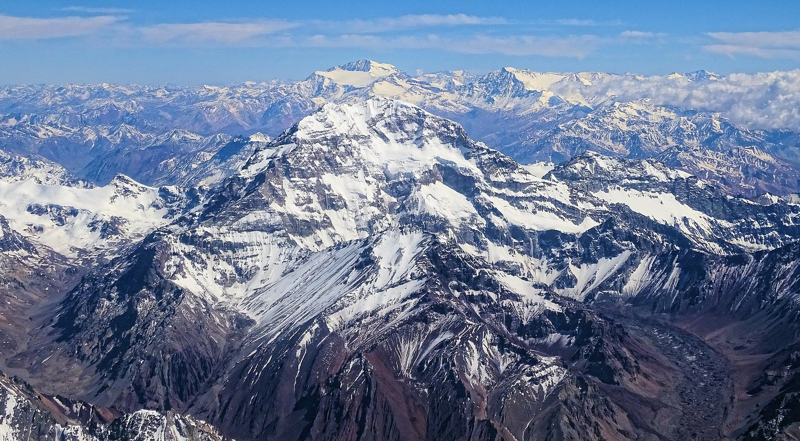

The Rise of Mountains
A mountain is an elevated portion of the Earth's crust, generally with steep sides that show significant exposed bedrock. Although definitions vary, a mountain may differ from a plateau in having a limited summit area, and is usually higher than a hill, typically rising at least 300 metres (980 ft) above the surrounding land. A few mountains are isolated summits, but most occur in mountain ranges.
Mountains are formed through tectonic forces, erosion, or volcanism, which act on time scales of up to tens of millions of years. Once mountain building ceases, mountains are slowly leveled through the action of weathering, through slumping and other forms of mass wasting, as well as through erosion by rivers and glaciers. High elevations on mountains produce colder climates than at sea level at similar latitude. These colder climates strongly affect the ecosystems of mountains: different elevations havedifferent plants and animals. Because of the less hospitable terrain and climate, mountains tend to be used less for agriculture and more for resource extraction, such as mining and logging, along with recreation, such as mountain climbing and skiing.
The highest mountain on Earth is Mount Everest in the Himalayas of Asia, whose summit is 8,850 m (29,035 ft) above mean sea level. The highest known mountain on any planet in the Solar System is Olympus Mons on Mars at 21,171 m (69,459 ft). The tallest mountain including submarine terrain is Mauna Kea in Hawaii from its underwater base at 9,330 m (30,610 ft); some scientists consider it to be the tallest on earth.
